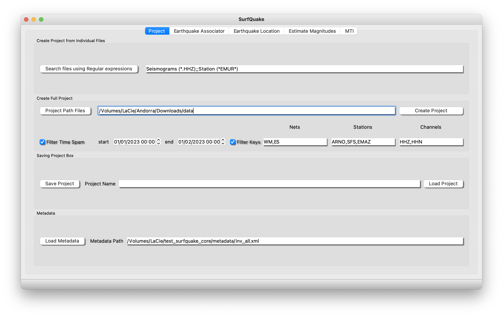
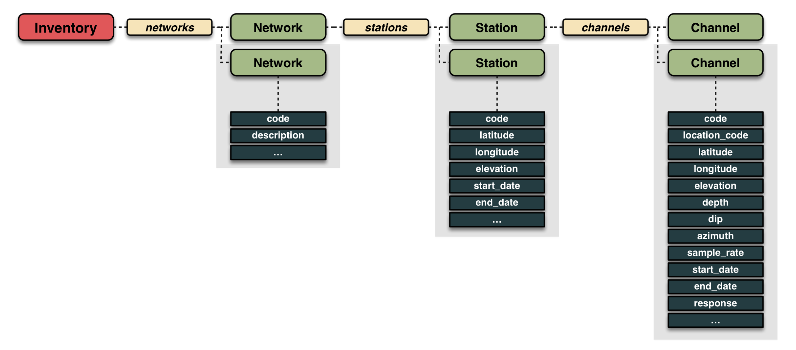

Create your project
In surfQuake a project is simply a python object that can store in its attributes the path to valid seismogram files plus the associated metadata. This strategy allows to proceed with fast filters or join different projects. Project is the necessary input for the toolboxes Picker, Associator, Event Locator, Seismic Source and MTI.
Here we will explain how the user can manage a project and be ready to proceed with the rest of toolboxes.
Project GUI
We start with the GUI. This is a screenshot of the Project GUI.

First, you need to choose between:
- Search files using Regular Expressions: Click in this button will open a window explorer to select the available files based on the filter edit line. In the example (.HHZ) and (EMUR*). Please set to blank space if you do not desire apply filters inside the window explorer. Then just select files and accept. The project will be automatically generated.
- Project Parth Files: This option is intendeed to let surfQuake search for valid seismogram files from a root folder in ahead. Optionally check Filter Time Spam and/or Filter Keys to include seismograms files that only fullfills the filter.
Second:
- Save Project It is very remmendable to save the project. So, Proceed to give a name to the project and save it pressing Save Project for later using.
Third:
- Load Project This action will open a window explorer so that you can select a project file previously saved and loaded. This will let you go ahead with the following toolboxes such as Picking Phases.
Finally:
- Metadata: Metadata file with the in there is information structured as a dictionary nets/stations/channels. Personally, the best way to make your own metadata file is using either the java software PDCC or going to the API Station Management Portal. We also give a tool to make your metadata from a stations file and response files here.

Project from CLI
Overview
This command allows you to create a seismic project, which is essentially a dictionary storing the paths to seismogram files along with their corresponding metadata.
Usage
Interactive help
Create Project example from CLI
In your termina, activate sufquake enviroment to have access to the commands. Then:
>> surfquake project -d /Volumes/LaCie/test_surfquake_core/testing_data -s /Volumes/LaCie/test_surfquake_core/testing_data/projects -n /surfquake_project_new.pkl --verbose
Project from library
Classes
In this section, we will explain the class SurfProject and we will explain how to manage your project from a simple example:
class SurfProject:
def __init__(self, root_path: Union[str, List[str]]):
"""
SurfProject class is designed to be able to storage the path to seismograms
files plus the file metadata information (i.e. sampling_rate, starttime...)
Attributes:
- root_path (str): The root path to the folder where the user have the data files.
Methods:
- __init__(root_path): Initialize a new instance of MyClass.
- load_project(path_to_project_file: str): Load a project from a file storage in hard-drive
- save_project(path_file_to_storage: str): Saves a project as a pickle file in hard-drive
- search_files(verbose=True, **kwargs): Create a project. It can be used filters by nets,
stations, channels selection and/or filter by timestamp
- filter_project_keys(**kwargs): Filter a project (once is crated) using regular expressions.
"""
Methods
def search_files(self, format="NONE", verbose=True, **kwargs):
"""
Args:
- verbose (bool): Description of arg1.
- nets (str): String with the name of selected nets to be filtered (i.e., "WM,ES")
- stations (str): String with the name of selected stations to be filtered (i.e., "ARNO,UCM,EMAL")
- channels (str): String with the name of selected channels to be filtered (i.e., "HHN,HHZ,HHE")
- starttime (str "%Y-%m-%d %H:%M:%S" ): String with the reference starttime, upper time spam threshold
(i.e.,"2023-12-10 00:00:00")
- endtime (str "%Y-%m-%d %H:%M:%S" ): String with the reference endtime, lower time spam threshold
(i.e.,"2023-12-23 00:00:00")
Returns:
- type: Description of the return value.
"""
def filter_project_keys(self, **kwargs):
"""
Args:
- net (str): String with the name of selected nets to be filtered (i.e., ".")
- station (str): String with the name of selected stations to be filtered (i.e., "ARNO|UCM|EMAL")
- channel (str): String with the name of selected channels to be filtered (i.e., "HH.")
"""
def filter_project_time(self, starttime: str, endtime: str):
"""
- starttime (str, "%Y-%m-%d %H:%M:%S"): String with the reference starttime, upper time spam threshold
(i.e., "2023-12-10 00:00:00")
- endtime (str, "%Y-%m-%d %H:%M:%S" ): String with the reference endtime, lower time spam threshold
(i.e., "2023-12-23 00:00:00")
"""
def save_project(self, path_file_to_storage: str)->bool
# Saves the project object as a pickle file.
Attibutes
Next, the example of using this class and its methods. This example script is available in SurfQuakeCore/examples/manage_project_new.py
The first step is create the object from the class SurfProject
The necessary input to create the sp object is the root path where you have storage the seismogram files. Then, you can proceed to apply the method "search_files". This method includes the possibility of filter the inclusion of files inside the project.
sp.search_files(starttime="2022-01-30 23:55:00", endtime="2022-02-01 00:30:00", stations="SALF,VALC", channels="HHZ")
print(sp) # To see the contain of the project
Additionally, once the project has been created, you can also filter it by using ´regular expressions´ net, station, channel using:
Note: some util Regex info at Wiki Regex and Python keywords
or filterintg the time spam using:
Adding projects using "+" symbol
sp_original1 = sp.copy()
sp_original1.filter_project_keys(station="SALF")
sp_original2 = sp.copy()
sp_original2.filter_project_keys(station="VALC")
sp_join = sp_original1 + sp_original2
Finally, you can save the project by,
and loading it